Огляди · журнал «ДентАрт» 2020 №4
Тріщини і переломи зубів
Teeth Cracks and Fractures
Діагностика і вибір методу лікування тріщин і переломів зубів становлять значну складність навіть для досвідченого клініциста. Такі захворювання зустрічаються приблизно у 9,7 % пацієнтів, переважно у віці 30-60 років.2 Ця патологія має дуже варіабельну симптоматику на різних стадіях розвитку, що може заплутати лікаря при постановці діагнозу і, як наслідок, призвести до вибору некоректного методу лікування.
Для досягнення клінічного успіху стоматологові також потрібно знати принципи біомеханіки тканин зуба — для того, щоб підібрати оптимальний реставраційний матеріал і техніку його застосування. Додаткова складність — відсутність уніфікованих протоколів лікування на різних етапах розвитку захворювання.
Загальні відомості, класифікація
Тріснутий зуб (cracked tooth) — зуб, у якому візуально простежується лінія тріщини, що найчастіше виникає у типових місцях концентрації оклюзійного стресу. Згодом при збільшенні тріщини в розмірі під дією циклічних навантажень це може призвести до перелому (відлому) частини зуба, найчастіше окремого горбика зуба (fractured cusp).19
Розколотий зуб (split tooth) характеризується як повний поздовжній перелом, у результаті якого утворюються два окремих фрагменти зуба.10
Синдром тріснутого зуба (cracked tooth syndrome) — симптомокомплекс, що характеризується як неповний перелом вітальних бічних зубів, межі якого містяться в дентині і можуть сягати порожнини зуба.8 Такі зуби болісно реагують на холодний подразник або тиск, пульпа з часом некротизується, хоча спочатку стан періодонта і пульпи характеризується як здоровий.10 До цього синдрому не входять повний перелом зуба і перелом девітального зуба, бо при цих нозологіях відсутні симптоми, характерні для синдрому тріснутого зуба.
Діагностика синдрому тріснутого зуба — важке завдання навіть для досвідчених лікарів-стоматологів через варіабельність клінічної картини. Рання діагностика є запорукою успішного реставраційного лікування.10
На сьогодні немає загальноприйнятої єдиної класифікації тріщин і переломів зубів. Найпоширеніша класифікація запропонована Американською асоціацією ендодонтистів (American Association of Endodontists classification of a cracked tooth), де виділяють п’ять варіантів тріщин зуба (рис. 1).
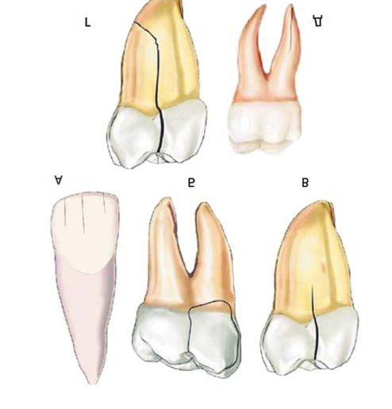
Видима тріщина, або тріщина емалі — лінійний дефект у межах емалі зуба, виникає фізіологічно внаслідок циклічних навантажень чи гострої травми. Безсимптомна, не вимагає лікування, якщо не порушує естетику.
Тріщина зуба — травматичний дефект коронкової частини зуба, межі якого сягають дентину, поширюється у мезіо-дистальному напрямку, часто в процес втягуються проксимальні гребені. Найчастіше тріщини зуба супроводжуються больовою симптоматикою, больовий симптом може бути як слабко, так і сильно вираженим. Відсутність відновних заходів призводить до збільшення розмірів тріщини і повного перелому зуба.19
Розкол зуба — травма, яка характеризується поділом зуба на два і більше фрагментів.
Вертикальний перелом кореня зуба — тяжка форма травматичного пошкодження, що характеризується виникненням тріщини в корені зуба, яка має переважно вертикальний напрямок і втягує у процес пульпу та періодонт зуба. Зуби з вертикальним переломом кореня найчастіше підлягають видаленню.
Відповідно до іншої класифікації,30 виділяють також тріщини периферійні і тріщини в межах дентину. Периферійні тріщини локалізуються лише в емалі і не вимагають стоматологічного втручання, якщо не викликають порушень естетики. Тріщини в межах дентину супроводжуються порушенням структури зуба — структурні тріщини вимагають лікування, оскільки при подальших циклічних навантаженнях існує великий ризик виникнення перелому.8
Етіологія
Етіологія тріщин і переломів коронкової частини і кореня зуба є мультифакторною. Гостра і хронічна оклюзійна травма — основний етіологічний фактор їх виникнення, а інші чинники, такі як порушення оклюзії, фактори розвитку, ятрогенні та низка інших, сприяють їх виникненню.
Тріщини і переломи виникають під дією надмірних сил на тканини здорового зуба або фізіологічних жувальних сил на зуби, ослаблені каріозним процесом чи реставраціями. У наш час найчастішим моментом виникнення фрактур вважається «жувальний інцидент» — накусування з надмірною силою на твердий, щільний предмет.
Виділяють такі основні фактори, що сприяють виникненню тріщин і переломів зубів, в тому числі синдрому тріснутого зуба:4
- Помилки при плануванні реставрації:
- а) нераціональний дизайн реставрації: надмірне препарування, недостатнє перекриття горбиків при виготовленні вкладок/накладок (inlay/onlay) реставрацій, глибоке горбиково-фісурне співвідношення;
- б) наявність місць концентрацій оклюзійного стресу (наявність внутріканального штифта, надмірний тиск під час припасування конструкції, надлишковий торк на абатменті або на опорах протяжних мостоподібних конструкцій).
- Оклюзійні фактори:
- а) «жувальний інцидент»;
- б) наявність суперконтактів на зубах;
- в) циклічні оклюзійні навантаження;
- г) об’ємні неліковані каріозні порожнини;
- ґ) незбалансована оклюзія;
- д) парафункція жувальних м’язів.
- Фактори розвитку:
- а) гіпокальцифікація тканин зуба;
- б) об’ємна порожнина зуба.
- Інші фактори (термічні фактори, пошкодження тканин зуба при роботі високошвидкісними наконечниками).
Вважається, що тріщини і переломи зустрічаються частіше в зубах з об’ємними реставраціями і зубах з активним каріозним процесом. За даними Hilton і співавт., 66 % пацієнтів з тріщинами і переломами зубів мали парафункцію жувальних м’язів (бруксизм і стискання зубів — clench), 81 % обстежених повідомили про те, що під час виникнення тріщини чи перелому вони перебували в стані стресу.22 За дослідженням Hiatt, у більш ніж 35 % випадків переломи спостерігалися в інтактних зубах.3 Найчастіше уражаються моляри нижньої щелепи — 59 % випадків. Вважається, що причина цього — «ефект клина», викликаний змиканням з оклюзійною поверхнею нижніх молярів виступаючого мезіального піднебінного горбика верхніх молярів. Рідше уражаються премоляри і моляри верхньої щелепи. 92 % зубів з тріщиною чи переломом мали реставрації.22 Зуби літніх людей більш схильні до розвитку тріщин, оскільки з віком тканини зуба стають більш крихкими і менш еластичними, в той час як сили, що діють на зуб під час жування, значно перевищують поріг еластичності дентину в цьому віці.1
Тріщини, що виникають у зубах, найчастіше мають мезіо-дистальний напрямок, іноді в молярах нижньої щелепи зустрічаються тріщини щічно-язичної орієнтації. За даними статистики, 72 % поздовжніх переломів зуба спостерігалися в зубах з реставраціями і тільки 28 % — в інтактних зубах.27 За своїм спрямуванням тріщини можуть бути доцентрові, вони йдуть у напрямку дентинних канальців і можуть сягати пульпи зуба, і ті, які йдуть до периферії зуба і призводять до переломів горбиків зуба.8
Діагностика
Діагностика синдрому тріснутого зуба завжди проблематична, особливо на ранніх стадіях, коли ще можна запобігти розвиткові перелому. Пацієнти скаржаться на відчуття дискомфорту, біль при накусуванні, хворобливість при впливі температурного, хімічного подразника, що може турбувати кілька місяців.1 Біль може бути як ниючий тупий, так і різкий, що нагадує удар електричним током.20 Часто пацієнт не може точно вказати на причинний зуб, бо в коронковій пульпі відсутні пропріорецептори, через що біль має ірадіюючий характер.
Для визначення зуба з тріщиною використовують накусувальний тест «bite test». При тріщині зуба накусування на твердий предмет викликає больові відчуття, які мають пульпарне походження, на відміну від болю, що виникає при симптоматичному апікальному періодонтиті, який має періодонтальну природу. У зубі з тріщиною перкусія буде позитивною лише в тому випадку, коли перкусія буде спрямована на фрагмент, відокремлений тріщиною. Саме для цього використовують такі підручні пристосування, як аплікатор, зубочистку, гумовий полір для селективної дії на ділянку зуба, де є тріщина.
Існують спеціальні пристосування Tooth Slooth (Proffessional Results) і FracFinder (Hu-Friedy) для проведення накусувального тесту (фото 1 і 2). Робоча частина обох інструментів має форму піраміди зі спрямованою вгору вершиною і плоским накусувальним майданчиком зі зворотного боку. Для виявлення причинної ділянки зуба інструмент ставлять вершиною піраміди на кожен горбик передбачуваного причинного зуба і просять повільно накусити на його плоску частину. На ділянці зуба з тріщиною біль буде виникати не безпосередньо при накусуванні, а після припинення дії жувального тиску. Відповідно до теорії Brannstrom, при русі відокремленого тріщиною фрагмента зуба виникає раптовий рух рідини в дентинних канальцях, що сприймається аферентними мієлінізованими нервовими волокнами А типу, і це викликає напад гострого болю.21
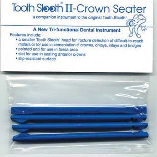
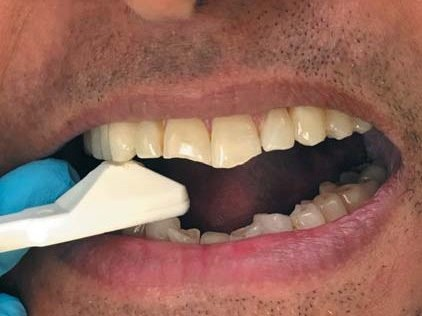
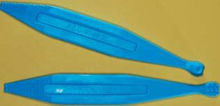
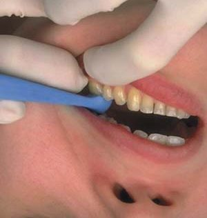
Для діагностики тріщин зуба потрібні додаткові методи обстеження — збільшення, трансілюмінація. Щоб визначити місце тріщини і її протяжність, для ліпшої візуалізації слід повністю видалити існуючу реставрацію. Дуже рідко і тільки поверхневі тріщини можуть бути забарвлені внаслідок каріозного процесу або харчовими барвниками.4 Деякі тріщини можна виявити за допомогою зондування тонким зондом. Для встановлення обрисів тріщин не рекомендується використовувати такі барвники, як генціанвіолет і метиленовий синій. Профарбовування в подальшому може перешкодити адгезії композиту та естетичній інтеграції постійної реставрації, а також призвести до збільшення протяжності тріщини.1
Застосування методу трансілюмінації дало можливість виявити локалізацію тріщини у 65 % випадків (фото 3).22
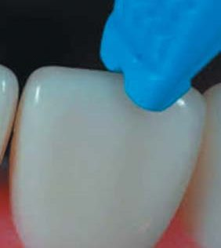
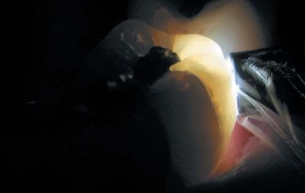
Прицільна рентгенографія не дозволяє виявити тріщину зуба, яка має мезіо-дистальний напрямок, тому що площина датчика радіовізіографа або рентгенівської плівки розташовується паралельно тріщині зуба. Цей метод дозволяє виявити лише ті тріщини, які йдуть у вестибуло-оральному напрямку (зустрічаються рідко), і також дозволяє провести диференціальну діагностику з низкою інших захворювань.
Використання конусно-променевої комп’ютерної томографії також не дозволяє виявити тріщину в тканинах зуба, бо розмір вокселя (voxel size), доступного для сучасного томографа, становить близько 0,075 мм, і це дозволяє візуалізувати лише тріщини, ширші 0,15 мм. Також наявність у каналі пломбувального матеріалу, внутріканальних штифтів призводить до виникнення артефактів на зрізах КТ. Цей метод ефективний при діагностиці вертикальних фрактур кореня зуба, і то не на ранніх стадіях, а опосередковано за рахунок виявлення кісткових змін — резорбції губчастої речовини альвеолярної кістки на ділянці тріщини зуба.19
Ретроспективно за допомогою рентгенологічного методу обстеження у пацієнтів з уже діагностованою тріщиною зуба вдалося виявити її лише у 2 % випадків.22
Біомеханіка зуба і типові місця виникнення тріщин
Деякі поверхні зуба максимально піддаються оклюзійному стресу, і в них найчастіше виникають тріщини і переломи.
Сама структура зуба адаптована до циклічних деформацій. Емаль зуба нагадує компресійний купол, за типом церковних куполів, вона трансформує і рівномірно передає жувальне навантаження через дентино-емалеве з’єднання на підлеглий дентин. Порушення цілісності емалевого компресійного купола веде до концентрації енергії в дентині — замість того, щоб розсіяти її рівномірно. Це призводить до виникнення тріщин і переломів зуба. Коронка зуба не тільки деформується, а й обертається під дією оклюзійних сил.
Також у зубі є ще кілька структур, призначених для поглинання оклюзійного стресу: периферійний шар емалі (він же другий силовий пояс), інфраоклюзійні навскісні трансверзальні гребені емалі, верхньощелепна мережа емалі.25 Нещодавно було з’ясовано, що нанокристали гідроксиапатиту, які містяться в колагенових волокнах дентину, підтримують волокна в напрузі. Це нагадує попередньо напружену сталеву арматуру в бетонних конструкціях, яка підтримує навколишні щільні структури гідроксиапатиту в постійній компресії (рис. 2).26 Стрес усередині конструкції збільшує резистентність самої конструкції і «працює» проти збільшення розмірів тріщини.
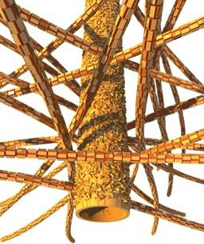
Комбінація усіх цих факторів дозволяє зубові успішно функціонувати протягом усього життя людини. Відомо, що дентин має ліміт утоми. Експериментально доведено, що циклічне жувальне навантаження на зуб за один цикл у середньому 30 МПа, а протягом року — 106 циклів. Такі циклічні навантаження на інтактний дентин не призводять до виникнення дефектів у його структурі. Але наявність у ньому дефекту (реставрації розміром 0,3-1,0 мм) призводить до виникнення тріщин, які можуть сягати катастрофічних розмірів і призвести до перелому зуба навіть під дією циклічних навантажень менше 30 МПа.28
Навколопульпарний дентин має меншу стійкість до утворення тріщин внаслідок циклової втоми, й інтенсивність «росту» тріщин у ньому вища в 1000 разів, ніж у плащовому дентині. Для виникнення тріщини у навколопульпарному дентині потрібні циклічні навантаження на 60 % менші, ніж для утворення тріщини у плащовому дентині. Саме тому синдром тріснутого зуба найчастіше розвивається у зубах з глибокими реставраціями.29
У фуркаційній зоні, яка утворена дном порожнини зуба багатокореневих зубів, виникають тріщини під дією оклюзійних циклічних навантажень, що в подальшому призводить до збільшення їх розмірів та формування розколу зуба з утворенням двох фрагментів. У молярах верхньої щелепи найчастіше відділяється піднебінний фрагмент, який містить піднебінний корінь і частину коронки зуба, і щічний, який містить два щічних корені та щічний фрагмент коронки. У молярах нижньої щелепи найчастіше утворюються два фрагменти, в яких розташовані мезіальний і дистальний корені. Найбільш схильні до перелому зуби з дефектами класу II за Блеком, де втрачено один чи два маргінальних гребені (перший силовий пояс зуба) або є дефекти в зоні екватора зуба (другий силовий пояс), що значно ослабляють структуру самого зуба.9 Доведено, що ендодонтичне лікування в зубах з ендодонтичним доступом, зробленим через оклюзійну поверхню, знижує жорсткість зуба на 5 %, в той час як створення МОД порожнини (відсутність другого силового пояса зуба) знижує її на 63 %.23 Метод лікування зубів з такою локалізацією тріщини в основному хірургічний — видалення зуба або зубозберігаючі операції (гемісекція, коронально-радикулярна сепарація).
Горбикова площина стресу локалізується апікально від одного горбика або двох і більше з’єднаних горбиків, заторкує в аксіальному напрямку стінки порожнини зуба або дах (але ніколи не поширюється на дно порожнини зуба), латерально поширюється на щічну або язичну поверхню, і можливо також під’ясенно на корінь.
У цій стресовій площині спостерігається виникнення повного або неповного перелому зуба, що проявляється відламом одного чи більше горбиків, межа якого може бути навіть у під’ясенній зоні.8 Більшість тріщин у цій площині виникає в зубах з реставраціями класу II, рідше класу I. Наявність реставрацій класу I і II збільшує ризики виникнення перелому зуба у 29 разів у порівнянні зі здоровими інтактними зубами.5
Дослідження, проведені Pascal Magne, засвідчили, що при докладанні сили 150 Н на оклюзійну поверхню інтактного премоляра відбувається дилятація горбиків на 2,7 мкм, а для порожнин, реставрованих матеріалом, який не має адгезії до тканин зуба (амальгама), — на величину від 5 мкм і до 179 мкм у порожнинах типу МОД. Для зубів, відновлених композитом, дилятація горбиків відбувалася в середньому на 3,5 мкм при відновленні дефектів класу I і на 6,9 мкм при відновленні МОД порожнин.6 Чим більша дилятація горбиків, тим вищий ризик виникнення перелому зуба.
Часто тріщина утворюється в середині зуба, без будь-яких видимих змін зовні, що значно ускладнює її раннє виявлення. В основному лікування таких зубів консервативне, воно полягає у відтворенні належної анатомічної форми в прямій або непрямій техніці, з умовою, що реставрований перешийок фрагмента не контактуватиме з горбиком зуба-антагоніста.
Ясенна стресова площина розташована на межі переходу супра- в інфрагінгівальну частину зуба. Супрагінгівальна частина зуба — та, яка вільно міститься у ротовій порожнині і вільно обертається під дією оклюзійних сил. Інфрагінгівальна частина, більш ригідна, щільно закріплена періодонтальними волокнами в альвеолярній кістці. Саме через відмінності у ступені рухливості на межі між інфра- та супрагінгівальною частиною зуба (що співпадає з місцем цементо-емалевого з’єднання) вона є зоною концентрації оклюзійного стресу. Найчастіше у цій зоні виникають тріщини і переломи різців верхньої щелепи за наявності надмірної оклюзійної сили з піднебінної поверхні, наприклад, при втраті бічних зубів або патологічному стиранні. У зубах, де неможливо провести ортодонтичну екструзію кореня, переломи в ясенній стресовій площині завжди закінчуються видаленням зуба, поскільку корінь не має ферула або його об’єму недостатньо для повноцінної реставрації.33, 34
Власне корінь зуба є ще однією зоною оклюзійного стресу. Тріщини і переломи в цій зоні виникають у результаті ускладненого перебігу карієсу кореня, внаслідок розколу зуба внутрішньоканальним анкером, у результаті докладання надмірної сили під час механічної обробки кореневого каналу, при роботі п’єзоримерами. Також імовірність перелому кореня зуба залежить обернено пропорційно від показників об’єму і маси самого кореня, а не його мезіо-дистальних чи вестибуло-оральних розмірів.24 Зуби з повними або неповними переломами кореня підлягають видаленню.
Принципи лікування
На сьогодні немає чітких показань до вибору того чи іншого консервативного методу лікування, в той час як показання до хірургічного методу цілком зрозумілі.
Хірургічне лікування
Видаленню підлягають зуби з вертикальною фрактурою кореня, фрактурою горбика зуба, де лінія розколу йде інфрагінгівально на 3 мм і більше, де ортодонтичне подовження зуба неефективне, є переломи у фуркаційній площині, лінія перелому яких розташована на дні порожнини зуба, де гемісекція, резекція кореня зуба або коронально-радикулярна сепарація неможливі.4,10
Консервативний метод лікування
Консервативний підхід полягає у з’єднанні фрагментованих частин зуба за допомогою адгезивної техніки або за рахунок хімічної адгезії з використанням склоіономерного цементу.7 Цей підхід вимагає високих професійних умінь і досвіду оператора. На результат лікування впливає низка чинників: кількість часу, що минув після виникнення тріщини (перелому), наявність чи відсутність запального процесу в навколишніх тканинах зуба, наявність чи відсутність втрати зубних структур, вітальність зуба, залученість кореневої частини зуба в зону перелому (тріщини).
Головне завдання полягає у запобіганні мікропідтіканням на всьому протязі тріщини, що призводять до некрозу пульпи, і забезпеченні негайної іммобілізації (сплінтування) фрагмента, що полегшує боль.11 Труднощі виникають при лікуванні тріщин, які йдуть доцентрово і можуть захоплювати порожнину зуба. Немає нічого складного при плануванні лікування перелому зуба, викликаного периферійними тріщинами, що не зачіпають порожнину зуба. Лікування полягає в тому, щоб відновити втрачений фрагмент у прямій або непрямій техніці реставрації.
Вважається, що перед проведенням реставрації потрібно повністю висікти навскісну тріщину зуба і фрагмент тканин над нею. Скісна тріщина на своєму протязі перетинає безліч дентинних трубочок, і якщо тріщину та фрагмент зуба над нею не видалити, це призведе до виникнення болю і запального процесу в пульпі зуба. Що ж до вертикально спрямованої тріщини коронки зуба, то слід висікти її повністю, без видалення зовнішнього фрагмента зуба, оскільки при вертикальних тріщинах менша кількість дентинних трубочок втягується у процес, тому біль може бути слабко виражений і запальні явища в пульпі спостерігаються рідше.
S. Abraham і L. Chacko пропонують при повному переломі коронкової частини зуба, який може поширюватися в зону фуркації і втягувати в процес зону кореневих каналів, висікати місце, де розташована тріщина, на глибину до 3 мм зсередини і зовні від порожнини зуба.7 Далі роблять адгезивну підготовку ділянки тріщини і заливають її текучим композитом. Порожнину зуба відновлюють тимчасовим пломбувальним матеріалом і провадять спостереження.
Зуб з тріщиною, яка має під’ясенний напрямок, потребує гінгівектомії для візуалізації країв тріщини. Зуб з вертикальним переломом, який проходить через дно порожнини зуба або нижче рівня альвеолярної кістки, підлягає видаленню.4
Виділяють кілька категорій консервативного методу лікування синдрому тріснутого зуба.11
Іммедіат-терапія — маніпуляції, спрямовані на купірування больового симптому, запобігання подальшому збільшенню розмірів тріщини і контамінації пульпи мікроорганізмами з ротової порожнини для запобігання виникненню незворотних змін.
Найпоширеніший метод з названих — іммобілізація за допомогою композитної шини, виготовленої у прямій техніці (табл. 1). Суть техніки полягає у внесенні порції композиту шаром 1,0-1,5 мм на всю оклюзійну поверхню, з переходом на зовнішні контури зуба, без редукції оклюзійної поверхні. Шина має бути контурована, на оклюзійній поверхні зуба не повинно бути оклюзійних контактів як у центральній оклюзії, так і в латеротрузії та протрузії.
Після іммедіат-терапії провадять спостереження за зубом протягом 2-4 тижнів і визначають подальшу тактику лікування.
| Спосіб | Переваги | Недоліки |
|---|---|---|
| Мідне кільце | забезпечує кругову іммобілізацію; мінімальна інвазивність; дешевизна | подразнення тканин пародонта; ускладнює гігієну; значні затрати часу при встановленні; естетичний аспект; протипоказане у пацієнтів з непереносимістю міді; вимагає спеціальних пристроїв для фіксації |
| Ортодонтичне кільце з неіржавіючої сталі | забезпечує кругову іммобілізацію; мінімальна інвазивність; дешевизна | подразнення тканин пародонта; ускладнює гігієну; значні затрати часу при встановленні; естетичний аспект |
| Тимчасова коронка | забезпечує кругову іммобілізацію; естетика | висока інвазивність; затрати часу; вартість |
| Композитна шина у прямій техніці | дешевизна; швидкість; естетичність; мінімальна інвазивність | не забезпечує кругової іммобілізації |
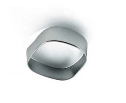
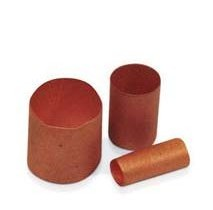
Внутрішньокоронкові реставрації типу вкладок (inlay) без перекриття горбиків у прямій техніці
При цьому способі застосовують матеріали, які мають адгезію до тканин зуба: бондовану амальгаму, композит, склоіономерний цемент. При використанні цих матеріалів не потрібне додаткове препарування тканин зуба — на відміну від лабораторно виготовлених конструкцій, що ще більше ослабило б структуру зуба. Найчастіше з перерахованих матеріалів використовують композит, бо він має максимальну адгезію до зубних тканин у порівнянні з іншими матеріалами і показники стирання, наближені до емалі.
При такому методі усунення тріщини зуб препарується в техніці вільного дизайну, з мінімальною оклюзійною редукцією або без неї. За результатами короткотермінового спостереження над зубом 21, лікованим цим методом, успішний результат становив 75 %.12 В іншому дослідженні, в якому спостереження над лікованими зубами провадилося протягом 7 років, невдачі становили лише 6 %.13 Цей спосіб не рекомендують застосовувати в зубах, де кількість відсутніх тканин становить понад половину відстані між горбиками.14
Полімеризаційний стрес — важливий фактор, від якого залежить успіх реставраційного лікування, особливо в порожнинах класу I, де значення С-фактора максимальне — 5 одиниць. Деякі автори, навпаки, розглядають це як позитивний фактор у зубах з тріщиною, оскільки полімеризаційний стрес у порожнинах класу I сприяє зближенню країв тріщини і горбиків зуба в напрямку до центру.15
У зубах з тріщинами і глибокими дефектами дентину лікарі намагаються будь-якими методами мінімізувати полімеризаційний стрес і запобігти подальшому збільшенню розмірів тріщини. Адгезивно-композитна система Ribbond виступає в ролі переривника стресу (stress breaker) і допомагає абсорбувати та рівномірно розподілити навантаження на ослаблені тканини зуба (фото 6). Цей метод дозволяє зміцнити структуру зуба, сам композит і контролювати полімеризаційний стрес (С-фактор), забезпечуючи рівномірний розподіл оклюзійного стресу на підлеглий дентин.31 Адгезивно-композитна система Ribbond захищає ослаблений дентин від виникнення нових тріщин і зупиняє збільшення розмірів уже наявних, згідно з механізмом, обґрунтованим Cook-Gordon. На рис. 3 схематично синьою лінією показано адгезивно-композитну систему Ribbond і дентино-емалеве з’єднання, поскільки вони мають схожі властивості; хід тріщини йде в середовищі 1 у напрямку до адгезивно-композитної системи Ribbond або дентино-емалевого з’єднання і там зупиняється, не переходячи в середовище 2, утворюючи Т-подібний стоппер тріщини.
David Alleman втілив це у техніці, яка дозволяє контролювати полімеризаційний стрес (С-фактор) при адгезивній підготовці у глибоких порожнинах зі скомпрометованим дентином (склерозованим і ураженим), де можлива адгезія в межах 10-15 МПа. Суть методики полягає у проведенні адгезивної підготовки порожнини зуба загальноприйнятим методом, після цього на дно порожнини вноситься текучий композит і стрічка Ribbond, яка має бути повністю оповита текучим композитом. Далі провадиться реставрація порожнини зуба в прямій або непрямій техніці.
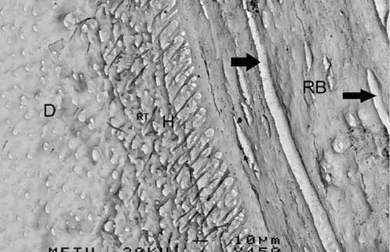
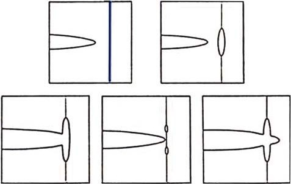
Непряма внутрішньокоронкова реставрація типу вкладка/inlay
Цей метод вважають недоцільним при лікуванні тріщин зуба, тому що для підготовки зуба до такої реставрації потрібне додаткове препарування здорових тканин, також реставрація не підлягає ремонту, а це важливо, тому що невдовзі може запотребитися ендодонтичне лікування цього зуба. Така реставрація, навпаки, буде мати «ефект клина» при впливі на неї оклюзійних сил від зубів-антагоністів і ще швидше призведе до виникнення перелому зуба у вертикальному і навскісному напрямках. Це пояснюється наявністю ефекту Поізона (Poisson effect) — у будь-якому ізотропному матеріалі під дією компресійних сил, де вектор сили спрямований в якомусь одному напрямку, деформації матеріалу будуть виникати у всіх інших трьох напрямках. Однак низкою досліджень доведено відсутність статистичних відмінностей між успішністю лікування при реставраціях типу вкладка/inlay, виготовлених у прямій і непрямій техніці.17,18
Пряма реставрація з перекриттям горбиків зуба типу overlay/onlay
Застосування цього методу зменшує дію оклюзійного стресу на ослаблені горбики зуба. Сам по собі композит має властивість поглинати оклюзійний стрес шляхом його рівномірного розподілу і тим самим зменшує концентрацію оклюзійних сил на ділянці зубних тканин, де розташована тріщина. Редукція висоти оклюзійної поверхні на 0,5-1,0 мм також зменшує величину деформації горбиків зуба при дії оклюзійних сил. Успішність цього методу становила 72,7 % через 11 років спостереження.16 Аналогічне дослідження фіксує 100 % успіх через 6-7 років після лікування.13 Метод має низку переваг: швидкість, дешевизна, висока клінічна ефективність, мінімальна інвазивність, легко підлягає заміні, якщо в подальшому зуб потребуватиме ендодонтичного лікування.
Металева (золота) адгезивна накладка/onlay
Під таку реставрацію потрібна редукція оклюзійної поверхні на опорних горбиках на величину 1 мм і 0,7 мм над напрямними. На величину 1,2 мм роблять препарування зуба навколо оклюзійної поверхні. Цей вид реставрації проводять через 1 рік спостереження після того, як виник синдром тріснутого зуба. Накладка із золота має оптимальне стирання, легко виготовляється, має високу резистентність до корозії, легко полірується, біосумісна. Усі конструкції із золотого сплаву мають високу адаптацію до прикусу, можливе навіть встановлення конструкції у супраоклюзії при лікуванні синдрому тріснутого зуба, поскільки самоадаптація цієї конструкції відбувається в середньому за 2-3 місяці, чого не мають інші матеріали. Недоліки конструкції: висока вартість, вимагає додаткового препарування, має погане крайове прилягання до країв емалі, незадовільну естетику.
CAD/CAM керамічні накладки і вкладки/onlay, overlay
Такий вид реставрації вважається оптимальнішим, ніж повна коронка, з точки зору біомеханіки, поскільки при препаруванні під повну коронку руйнується так званий bio-rim, що забезпечує стійкість зуба до циклічних навантажень. Bio-rim — ділянка бічних зубів, яка лежить нижче максимальної точки опуклості. Можна собі уявити, що bio-rim — це стіни, які підтримують купол собору. При збереженні bio-rim і виготовленні адгезивних реставрацій непрямим методом з опорою на нього ризик виникнення тріщин і перелому зуба буде мінімальним — на відміну від виготовлення повних коронок, з редукцією bio-rim. Саме тому варто відмовитися від виготовлення повних коронок при відновленні зубів з тріщиною чи переломом коронкової частини.25
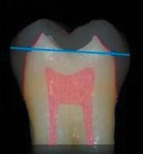
Адгезивні реставрації типу onlay і overlay за своєю структурою нагадують емалевий купол природного зуба. У зубах з тріщинами і фрактурами коронкової частини перед підготовкою зуба до протезування бажано робити адгезивно-композитну підготовку системою Ribbond для зменшення полімеризаційного стресу, запобігання утворенню нових тріщин і збільшенню вже наявних.
Висновки
Для зменшення кількості випадків тріщин і переломів зубів, більшість із яких викликана дією ятрогенного чинника, стоматологи мають запобігати їх виникненню. До заходів запобігання належать раціональне мінімально інвазивне препарування зуба, правильно обраний метод і конструкція реставрації, збалансована оклюзія і низка інших чинників.
До того ж стоматолог повинен знати основи біомеханіки зуба і зубних тканин, стоматологічного матеріалознавства для вибору потрібного реставраційного матеріалу і конструкції самої реставрації, і це відіграватиме ключову роль в успіху і довговічності лікування зубів з тріщинами або переломом.
Література
- Banerji S., Mehta S., Millar B. Cracked tooth syndrome. Part 1: aetiology and diagnosis. Br Dent J 208, 459–463 (2010).
- Krell K., Rivera E. A six year evaluation of cracked teeth diagnosed with reversible pulpitis; treatment and prognosis. J Endod 2007; 33: 1405–1407.
- Hiatt W. H. Incomplete crown-root fractures in pulpal periodontal disease. J Periodontol 1973; 44: 369–379.
- Lynch C., McConnel R. The cracked tooth syndrome. J Can Dent Assoc 2002; 68: 470–475.
- Ratcliff S., Becker I., Quinn L. Type and incidence of cracks in posterior teeth. J Prosthet Dent 2001; 86: 168–172.
- Magne P., Oganesyan T. CT scan-based finite element analysis of premolar cuspal deflection following operative procedures. Int J Periodontics Restorative Dent. 2009; 29(4): 361–369.
- Abraham S., Chacko L. N. Split posterior tooth: conservative clinical reattachment. BMJ Case Rep. 2014; 2014: bcr2013202695.
- Mamoun J. S., Napoletano D. Cracked tooth diagnosis and treatment: An alternative paradigm. Eur J Dent. 2015; 9(2): 293–303.
- Радлинский С. Биомеханика зубов и реставраций // ДентАрт. — 2006. — № 2. — С. 42–48.
- Hasan S., Singh K., Salati N. Cracked tooth syndrome: Overview of literature. Int J App Basic Med Res 2015; 5: 164–168.
- Banerji S., Mehta S., Millar B. Cracked tooth syndrome. Part 2: restorative options for the management of cracked tooth syndrome. Br Dent J 208, 503–514 (2010).
- Opdam N. J., Roeters J. J. The effectiveness of bonded composite restorations in the treatment of painful, cracked teeth: six month evaluation. Oper Dent 2003; 28: 327–333.
- Opdam N. J., Roeters J. J., Loomans R. A., Bronkhorst E. Seven year clinical evaluation of painful, cracked teeth restored with a direct composite restoration. J Endod 2008; 34: 808–811.
- Geurtsen W., Orth M., Gartner A. Fracture resistance of human maxillary molars with MOD amalgam or composite fillings. Dtsch Zahnarztl Z 1989; 44: 108–110.
- Stavridakis M. M., Kakaboura A. I., Ardu S., Krejci I. Marginal and internal adaptation of bulk filled class I and cuspal coverage direct resin composite restorations. Oper Dent 2007; 32: 515–523.
- Van Dijken J. W. V. Direct resin composite inlays/onlays: an 11 year follow up. J Dent 2000; 28: 299–300.
- Wassell R. W., Walls A. W. G., McCabe J. F. Direct composite inlays versus conventional composite restorations: 5 year follow up. J Dent 2000; 28: 375–382.
- Roznowski M., Bremer B., Geurtsen W. Fracture resistance of human molars restored with various filling materials. In: Moermann W. H. Proceedings of the international symposium on computer restorations. Pp. 559–566. Chicago: Quintessence, 1991.
- Berman L., Hargreaves K. Cohen’s Pathways of the Pulp. 11th Edition, 2015. — 928 с.
- Bakland L. K., Silvestrin T. Diagnosing and Managing the Cracked Tooth. Part 1: Crown-Originating Fractures. Metlife. — 2017. — С. 1–9.
- Brännström M., Åström A. The hydrodynamics of the dentine; its possible relationship to dentinal pain. Int Dent J 1972; 22: 219–227.
- Hilton T. J. et al. Recommended treatment of cracked teeth: Results from the National Dental Practice-Based Research Network. Journal of Prosthetic Dentistry, Volume 123, Issue 1, 71–78.
- Reeh E. S., Messer H. H., Douglas W. H. Reduction in tooth stiffness as a result of endodontic and restorative procedures. J Endod. 1989; 15(11): 512–516.
- Ertas H., Sagsen B., Arslan H., Er O., Ertas E. T. Effects of physical and morphological properties of roots on fracture resistance. Eur J Dent. 2014; 8(2): 261–264.
- Milicich G. The compression dome concept: the restorative implications. Gen Dent. 2017; 65(5): 55–60.
- Forien J.-B., Fleck C. et al. Compressive Residual Strains in Mineral Nanoparticles as a Possible Origin of Enhanced Crack Resistance in Human Tooth Dentin. Nano Letters 2015; 15(6): 3729–3734.
- Seo D. J., Yi Y. A., Shin S. J., Park J. W. Analysis of factors associated with cracked teeth. J Endod. 2012 Mar; 38(3): 288–292.
- Kinney J. H., Marshall S. J., Marshall G. W. (2003). The Mechanical Properties of Human Dentin: a Critical Review and Re-evaluation of the Dental Literature. Critical Reviews in Oral Biology & Medicine, 14(1), 13–29.
- Ivancik J., Neerchal N. K., Romberg E., Arola D. The Reduction in Fatigue Crack Growth Resistance of Dentin with Depth. J Dent Res 2011; 90(8): 1031–1036.
- Belli S., Eraslan O., Eskitascioglu G., Karbhari V. Monoblocks in root canals: a finite elemental stress analysis study. International Endodontic Journal, 44, 817–826, 2011.
- Johnson R. Descriptive classification of traumatic injuries to the teeth and supporting structures. J Am Dent Assoc. 1981; 102: 195–197.
- Belli S., Donemz N., Eskitasciogiu G. The Effect of C-Factor and Flowable Resin or Fiber Use at the Interface on Microtensile Bond Strength to Dentin. J Adhes Dent; 8: 247–253.